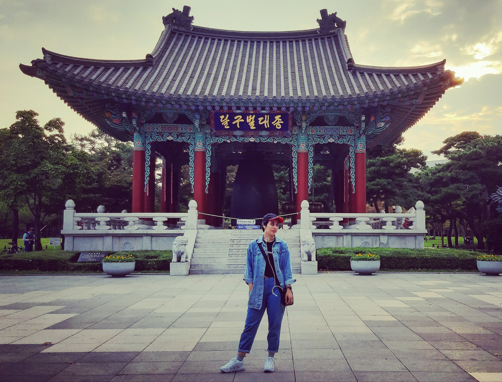

|  |
Nahid SalehiEmail: n.salehi@nic.ui.ac.ir - salehinahid7@gmail.comDate of Birth: Sep. 18, 1995 LinkedIn: nahidsalehi95s I am currently an IT/Network specialist and a member of the R&D team, at the CITC center of Isfahan University. I graduated from a dual degree master's program in South Korea and Iran in the field of AI and Game Engineering. My research interests include Machine Learning, Computer Networks, Cyber Security, Computer Graphics, Virtual Reality, and Full-stack Web Development. Contact Me |
| M.Sc., Computer Engineering -Artificial Intelligence Dual Degree Program: Keimyung University (Daegu, South Korea) - University of Isfahan(Isfahan, Iran) THESIS - Simulation of Group Formation based on Deep Reinforcement Learning Supervisors: Prof. Mankyu Sung (Korea), Hossein Mahvash (Isfahan) GPA 3.7/4.0 |
Sep. 2018 - Mar. 2021 |
| B.Sc., Isfahan University, Isfahan, Iran THESIS - Android Application: PC Remote Controller Supervisor: Prof. Ahmad Reza Naghshnilchi GPA 3.3/4.0 |
Sep. 2012 - Feb. 2017 |
| IT/Network Specialist | May 2022 - ~ |
Isfahan University
|
|
| Research Assistance | Nov. 2019 - July 2021 |
Keimyung University (KMU), Computer Game Department, South Korea
|
|
| VR Game: Machine Gun Robots | Nov. 2019 - July 2021 |
Keimyung University (KMU), South Korea
|
|
| Master's Thesis: Simulation of Group Formation based on Deep Reinforcement Learning | Sep. 2021 |
Computer Engineering Department, UI - KMU
|
|
| Bachelor's Thesis: PC Remote Controller | Sep. 2017 |
Computer Engineering Department, University of Isfahan (UI)
|
|
| Job Finder Android Application | July 2017 |
Computer Engineering Department, University of Isfahan
|
| C++ | ★★★★☆ | PHP | ★★★☆☆ |
| HTML | ★★★☆☆ | CSS | ★★★☆☆ |
| Javascript | ★★★☆☆ | Reactjs | ★★★☆☆ |
Classical guitar, Basketball, Photographing, Making videos, Reading books